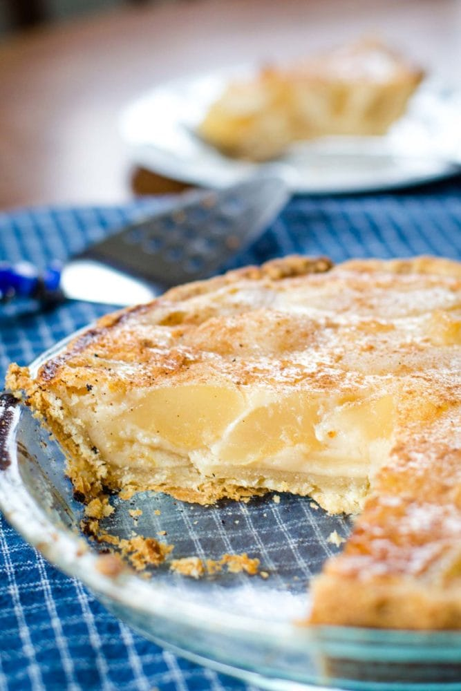

ODIN RECIPES

Homemade Fear Pie
Ingredients
- 2 pack of ready-made pie pastry
- A list of all things that make you jumpy
- Half cup of sugar
- Tiny amount of lemon zest and juice for a little zing
- 3-5 drops of sweat obtained through being spooked
- A dash of cinnonym
- 1 tbspn BUTTer
Steps
- Preheat oven to 230 degrees Celsius. Line a pie plate with the first pie crust pack.
- Combine the zing, sweat, sugar, cinnonym, and flour in a bowl.
- Read out your fear list and tear through each fear one by one.
- Arrange layers of the torn off fear pieces in the crust made in step 1. Add some of the mixture made in step 2 over each layer. Put some small pieces of butter for some added flavor and richness.
- Cover the pie with the remaining pack of pie crust and seal the edges. Be thorough with this process as we don't want the fear filling to come out.
- Bake in preheated oven for around 10 min. After 10 min, lower the temperature to 175 degrees Celsius. Bake for another 35 to 40 minutes until crust is golden.